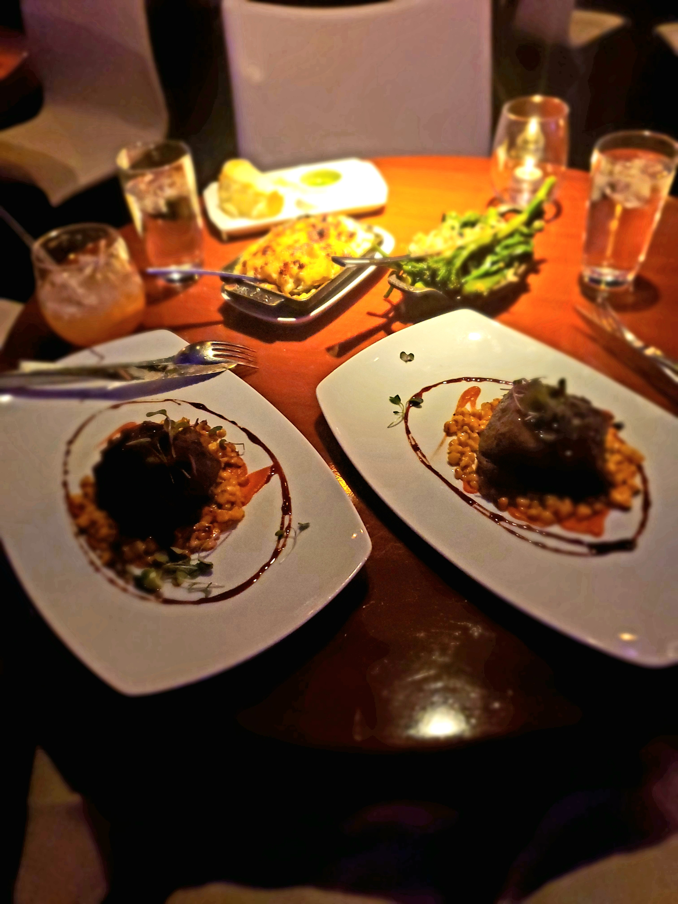

Our Trip to Las Vegas

This is my recent vacation to Las Vegas. It was my 5th yr wedding anniversary, and one of the best trips I've been on. We expereinced different things, stepped out of our comfort zone, fell deeper into our connection with one another and had an awesome time. We can't wait to go back!
The Red Canyon

We went to the Red Canyon. Which is absolutely breathtaking. We took a 13 mile one way drive through the Canyon which takes you to different areas in the canyon to hike and walk through. It was an extermely hot day as expected in Las Vegas in May. But the tour was worth staying in the heat. We came across a snake that scared us right back to our cars! What amazed me the most was the silence of the canyon. It's a moment you can expereince to sit in the silence and be present. There's nothing like it.
The Rail Explorers
Pedal powered rail vehicles date back to at least the 1850’s, when maintenance workers used hand-cars and ‘rail bikes’ to travel along the tracks. We decided to take a ride on a 4-mile rail tour that was really fun. We had to pedal through the canyon to get to the end of the tour.
STK Steakhouse
STK is one of the many restaurants located inside of the Cosmopolitan Hotel. We came here for our anniversary dinner and the food was delicious. We ordered the short rib with mac & cheese and veggies. The ambiance was very romanitc, the drinks were really unique and the food was unforgettable.
